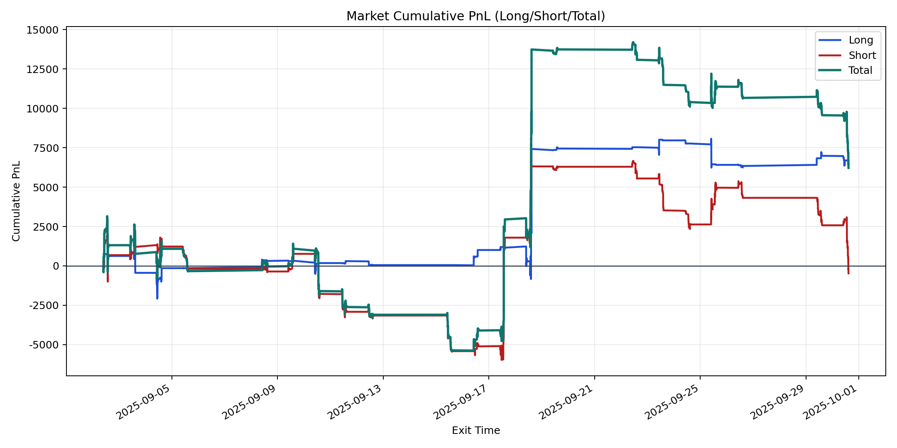
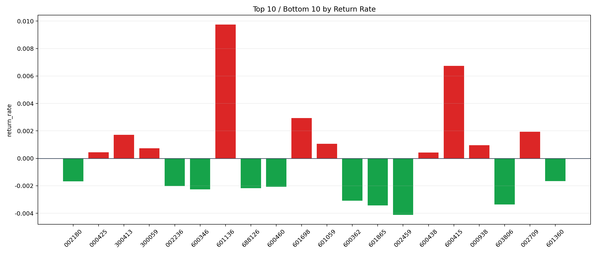

| repo_root | /home/haoranyou/data/output/alpha0.4_1w_5s_3ticks_index_filter/index_weights_300 |
|---|---|
| period_months | 1 |
| period_label | 2025-09-02_to_2025-09-30 |
| start_time | 2025-09-02 09:54:47 |
| end_time | 2025-09-30 14:45:02 |
| n_trades | 3595 |
| n_symbols | 41 |
| total_pnl | 6219.11625000009 |
| long_total_pnl | 6693.525350000004 |
| short_total_pnl | -474.4090999999162 |
| total_entry_notional | 32746429.0 |
| long_entry_notional | 9752558.0 |
| short_entry_notional | 22993871.0 |
| total_return_rate | 0.00018991738763332301 |
| long_return_rate | 0.0006863353542732075 |
| short_return_rate | -2.063198058299606e-05 |
| top_symbols_by_return | ["601136", "600415", "601698", "002709", "300413", "601059", "000938", "300059", "000425", "600438"] |
| bottom_symbols_by_return | ["002459", "601865", "603806", "600362", "600346", "688126", "600460", "002236", "002180", "601360"] |

